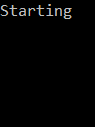

Converting asynchronous cancellation from C# to F#
Examples of how to convert asynchronous code involving cancellation from C# to F#.
Recently I was converting some asynchronous code from C# to F#. I knew that cancellation tokens were treated differently, that F# "implicitly" handles the cancellation token, but it still took me longer than I expected to figure out the correct code.
Below are four typical examples of asynchronous code in C#. Each is paired its behavioral equivalent (or nearly so) in F#, especially as it relates to cancellation.
This post is my contribution to the F# Advent Calendar in English 2020. This holiday season, treat yourself by reading all the other great posts about F# by all the other great authors.
All code examples are available in their full and executable form here.
A non-blocking wait is typically achieved by calling Task.Delay in C# and
Async.Sleep in F#. To stop the asynchronous computation while waiting, the CancellationToken token must be explicitly passed to Task.Delay. In contrast, the CancellationToken token is implicitly passed to Async.Sleep.
1linkstatic async Task Foo(CancellationToken ct) {
2link try {
3link Console.WriteLine("Starting");
4link await Task.Delay(1000, ct);
5link Console.WriteLine("Waiting");
6link await Task.Delay(1000, ct);
7link Console.WriteLine("Waiting");
8link await Task.Delay(1000, ct);
9link Console.WriteLine("Waiting");
10link await Task.Delay(1000, ct);
11link Console.WriteLine("Completed");
12link } catch (TaskCanceledException) {
13link Console.WriteLine("Canceled");
14link }
15link}
16link
17linkstatic async Task<int> Main() {
18link using var cts = new CancellationTokenSource();
19link _ = Foo(cts.Token);
20link await Task.Delay(2500);
21link cts.Cancel();
22link _ = Console.ReadKey();
23link return 0;
24link}
1linklet foo () = async {
2link use! __ = Async.OnCancel(fun () -> Console.WriteLine "Canceled")
3link Console.WriteLine "Starting"
4link do! Async.Sleep 1000
5link Console.WriteLine "Waiting"
6link do! Async.Sleep 1000
7link Console.WriteLine "Waiting"
8link do! Async.Sleep 1000
9link Console.WriteLine "Waiting"
10link do! Async.Sleep 1000
11link Console.WriteLine "Completed"
12link}
13link
14link[<EntryPoint>]
15linklet main _ =
16link use cts = new CancellationTokenSource ()
17link Async.Start (foo (), cts.Token)
18link Async.Sleep 2500 |> Async.RunSynchronously
19link cts.Cancel ()
20link Console.ReadKey () |> ignore
21link 0
(Normally I would use the wildcard pattern _ in in place of __ in the F# code, but that is not currently supported.)
In both languages, this is the output.
If the call to CancellationTokenSource.Cancel is removed, then this is the output in both languages.

It is possible to explicitly check if some asynchronous computation should be stopped via the instance property CancellationToken.IsCancellationRequested. Of course an instance of CancellationToken is required in order to call that property. It is obvious how to do this in C# because the CancellationToken instance is explicitly available as a method argument. In F#, the CancellationToken instance is obtained by calling Async.CancellationToken.
1linkstatic void BusyWait() {
2link foreach (var _ in Enumerable.Repeat(0, 150000000)) { }
3link}
4link
5linkstatic void Foo(CancellationToken ct) {
6link Console.WriteLine("Starting");
7link BusyWait();
8link Console.WriteLine("Waiting");
9link if (ct.IsCancellationRequested) {
10link Console.WriteLine("Canceled");
11link return;
12link }
13link BusyWait();
14link Console.WriteLine("Waiting");
15link if (ct.IsCancellationRequested) {
16link Console.WriteLine("Canceled");
17link return;
18link }
19link BusyWait();
20link Console.WriteLine("Waiting");
21link if (ct.IsCancellationRequested) {
22link Console.WriteLine("Canceled");
23link return;
24link }
25link BusyWait();
26link Console.WriteLine("Completed");
27link}
28link
29linkstatic async Task<int> Main() {
30link using var cts = new CancellationTokenSource();
31link _ = Task.Run(() => Foo(cts.Token));
32link await Task.Delay(1500);
33link cts.Cancel();
34link _ = Console.ReadKey();
35link return 0;
36link}
1linklet busyWait () =
2link for _ in Enumerable.Repeat(0, 150000000) do ()
3link
4linklet foo () = async {
5link let! ct = Async.CancellationToken
6link Console.WriteLine "Starting"
7link busyWait ()
8link Console.WriteLine "Waiting"
9link if (ct.IsCancellationRequested) then
10link Console.WriteLine "Canceled"
11link else
12link busyWait ()
13link Console.WriteLine "Waiting"
14link if (ct.IsCancellationRequested) then
15link Console.WriteLine "Canceled"
16link else
17link busyWait ()
18link Console.WriteLine "Waiting"
19link if (ct.IsCancellationRequested) then
20link Console.WriteLine "Canceled"
21link else
22link busyWait ()
23link Console.WriteLine "Completed"
24link}
25link
26link[<EntryPoint>]
27linklet main _ =
28link use cts = new CancellationTokenSource ()
29link Async.Start (foo (), cts.Token)
30link Async.Sleep 1500 |> Async.RunSynchronously
31link cts.Cancel ()
32link Console.ReadKey () |> ignore
33link 0
(The exact number of iterations in the busy wait is not so special. I adjusted it until I felt like it took about a second to execute on my machine.)
In both languages, this is the output.
If the call to CancellationTokenSource.Cancel is removed, then this is the output in both languages.
Asynchronous code might not have a way to be stopped. In C#, this is the default behavior. When no CancellationToken is given to Task.Delay, it is as though CancellationToken.None is given (since it is the default for its type), which is a CancellationToken that cannot be canceled. This is not the default behavior in F#, so CancellationToken.None must be explicitly given to Async.Start.
1linkstatic async Task Foo() {
2link Console.WriteLine("Starting");
3link await Task.Delay(1000);
4link Console.WriteLine("Waiting");
5link await Task.Delay(1000);
6link Console.WriteLine("Waiting");
7link await Task.Delay(1000);
8link Console.WriteLine("Waiting");
9link await Task.Delay(1000);
10link Console.WriteLine("Completed");
11link}
12link
13linkstatic int Main() {
14link _ = Foo();
15link _ = Console.ReadKey();
16link return 0;
17link}
1linklet foo () = async {
2link Console.WriteLine "Starting"
3link do! Async.Sleep 1000
4link Console.WriteLine "Waiting"
5link do! Async.Sleep 1000
6link Console.WriteLine "Waiting"
7link do! Async.Sleep 1000
8link Console.WriteLine "Waiting"
9link do! Async.Sleep 1000
10link Console.WriteLine "Completed"
11link}
12link
13link[<EntryPoint>]
14linklet main _ =
15link Async.Start (foo (), CancellationToken.None)
16link Console.ReadKey () |> ignore
17link 0
In both languages, this is the output.
The behavior of Async.Start and its variants when not given a CancellationToken is to use the one returned by the static property Async.DefaultCancellationToken. That instance can either be directly canceled by calling CancellationTokenSource.Cancel or indirectly canceled by calling Async.CancelDefaultToken. Therefore, if the previous F# code did not explicitly pass CancellationToken.None, then it would be impure because of mutable static state, which is the worst kind of impurity!
1linklet foo () = async {
2link use! __ = Async.OnCancel(fun () -> Console.WriteLine "Canceled")
3link Console.WriteLine "Starting"
4link do! Async.Sleep 1000
5link Console.WriteLine "Waiting"
6link do! Async.Sleep 1000
7link Console.WriteLine "Waiting"
8link do! Async.Sleep 1000
9link Console.WriteLine "Waiting"
10link do! Async.Sleep 1000
11link Console.WriteLine "Completed"
12link}
13link
14link[<EntryPoint>]
15linklet main _ =
16link //Async.Start (foo (), CancellationToken.None)
17link Async.Start (foo ())
18link Async.Sleep 2500 |> Async.RunSynchronously
19link Async.CancelDefaultToken ()
20link Console.ReadKey () |> ignore
21link 0
This is the output.
If CancellationToken.None is given to Async.Start, then canceling the default token has no effect, and the original behavior is restored.
Asynchronous code might contain a loop. If some corresponding asynchronous computation should be stopped, then it is reasonable to also exit the loop. In C#, this must be done explicitly by calling CancellationToken.IsCancellationRequested in the loop's termination condition, which is similar to the IsCancellationRequested example. In F#, this is done implicitly, which is similar to the Waiting example.
1linkstatic void BusyWait() {
2link foreach (var _ in Enumerable.Repeat(0, 150000000)) { }
3link}
4link
5linkstatic void Foo(CancellationToken ct) {
6link Console.WriteLine("Starting");
7link var i = 0;
8link while (!ct.IsCancellationRequested && i < 3) {
9link BusyWait();
10link Console.WriteLine("Waiting");
11link i++;
12link }
13link BusyWait();
14link if (ct.IsCancellationRequested)
15link Console.WriteLine("Canceled");
16link else
17link Console.WriteLine("Completed");
18link}
19link
20linkstatic async Task<int> Main() {
21link using var cts = new CancellationTokenSource();
22link _ = Task.Run(() => Foo(cts.Token));
23link await Task.Delay(1500);
24link cts.Cancel();
25link _ = Console.ReadKey();
26link return 0;
27link}
1linklet busyWait () =
2link for _ in Enumerable.Repeat(0, 150000000) do ()
3link
4linklet foo () = async {
5link use! __ = Async.OnCancel(fun () -> Console.WriteLine "Canceled")
6link Console.WriteLine "Starting"
7link let mutable i = 0
8link while (i < 3) do
9link busyWait ()
10link Console.WriteLine "Waiting"
11link i <- i + 1
12link busyWait ()
13link Console.WriteLine "Completed"
14link}
15link
16link[<EntryPoint>]
17linklet main _ =
18link use cts = new CancellationTokenSource ()
19link Async.Start (foo (), cts.Token)
20link Async.Sleep 1500 |> Async.RunSynchronously
21link cts.Cancel ()
22link Console.ReadKey () |> ignore
23link 0
The output differs slightly. In C#, clearly Waiting is never printed after Canceled. In F#, the callback given to Async.OnCancel is executed shortly after CancellationTokenSource.Cancel is called, which prints Canceled. In the meantime, the busy wait is still executing. When that is done, the current iteration of the loop is finished, which prints Waiting.
C# output F# output
I did not know that F# considers stopping asynchronous computations after each loop iteration until I was part way through writing this post. I looked but failed to find this behavior described in documentation. Please share a link in a comment if you know of such documentation.
Added 2021-03-01
I still haven't found any documentation on the matter, but I have statically verified this behavior (that I experienced at runtime). A
whileloop inside anasynccomputational expression becomes a call to to thisWhilemethod,
- which calls
CreateWhileAsync,- which calls
CreateBindAsync,- which calls
Bind,- which checks if the
CancellationTokenwas cancelled.
If the call to CancellationTokenSource.Cancel is removed, then this is the output in both languages.
Suppose the C# code never checked CancellationToken.IsCancellationRequested. Then the F# code would need to replace the loop with tail recursion. This is conceptually similar to the Never Stop example in that the F# code needs to explicitly avoid implicit calls to CancellationToken.IsCancellationRequested.
The tags feature of Coding Blog Plugin is still being developed. Eventually the tags will link somewhere.
#Recommendation #CSharp #FSharp